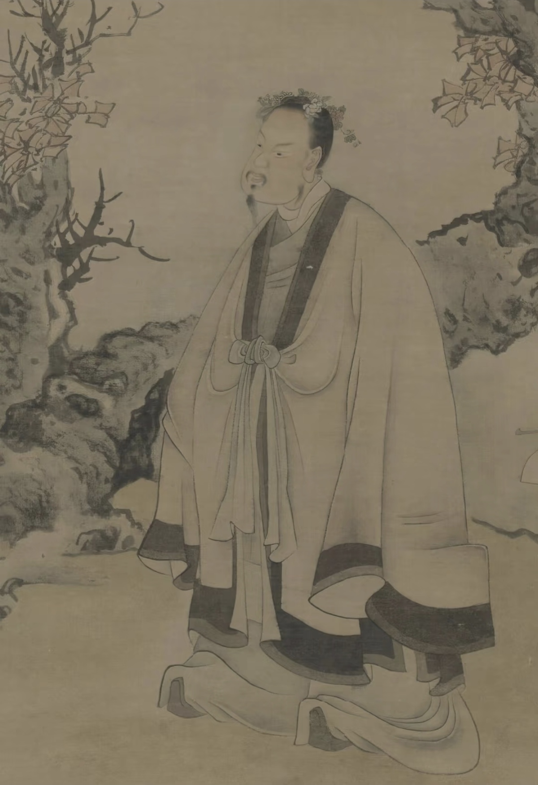

什么是簪花
簪花是中国古代人头饰的一种，也叫戴花、簪戴、插花，
就是将鲜花或其他材料制作的花朵戴在头上。
通常是由筷子状的象牙簪固定在螺旋状的发髻上，再由鲜花或其它材料制成的花朵缠绕起来。2008年，泉州蟳埔女的“簪花围”被列入国家级非物质文化遗产名录。
- 汉代
-
东汉献食女陶
 两汉时期女子以鲜花插于发鬓，为一种普遍的俗饰。陆贾在《南越行纪》中的记载表明当时已有将花穿彩丝做首饰的习俗，耶悉茗花（素馨）、茉莉花被用来簪戴。考古发掘显示，东汉时巴蜀女子簪花较流行，在重庆化龙桥、四川成都扬子山和忠县涂井等东汉墓出土的女陶俑，发髻上均簪插鲜花或人造像生花。
两汉时期女子以鲜花插于发鬓，为一种普遍的俗饰。陆贾在《南越行纪》中的记载表明当时已有将花穿彩丝做首饰的习俗，耶悉茗花（素馨）、茉莉花被用来簪戴。考古发掘显示，东汉时巴蜀女子簪花较流行，在重庆化龙桥、四川成都扬子山和忠县涂井等东汉墓出土的女陶俑，发髻上均簪插鲜花或人造像生花。 - 魏晋南北朝-唐代
-
唐代簪花仕女图魏晋南北朝时期，人们崇尚自然，手持秉花，佩戴襟花，发髻簪花，为普遍现象。尤其到了唐代，无论是平民百姓还是皇室贵族，都喜欢在头上簪花，而且随着时代发展，簪花样式和品种也越来越丰富，甚至形成了一定的礼仪体系。 唐杜牧诗有“莫怪杏园憔悴去，满城多少插花人”“有恨簪花懒”“菊花须插满头归”句。
- 宋代
-
宋仁宗皇后坐像两宋时期，盛行簪花，蔚然成风。北宋时，以丝绸锦缎、通草作仿真生色花，显贵豪门并加饰金玉、珠翠、玳瑁。当时京都汴梁，设立有专营簪花之商铺。礼仪簪花，用不同材料制作，颜色亦不同，分别官阶使用。按宋制，皇帝赐花百官，以罗花最贵，不同场合，赐花内容也有区别。
- 元明清时期
-
明代升庵簪花图簪花风俗有所演变，虽然不像宋代那样全民盛行，但依旧保持在一定的社会阶层和特定的节日庆典中，且随着化妆技术的发展，簪花更多地与发型妆容相结合，成为整体形象设计的一部分。而到了清代流行女子簪花，男子一般都不簪花。除汉族外，当时各族妇女亦盛行簪花。
- 近现代
-
泉州簪花2008年，泉州蟳埔女的“簪花围”被列入国家级非物质文化遗产名录。近年来，随着旅游业的兴起和文化交流的增多，蟳埔女的簪花围逐渐走红网络。2023年初，演员赵丽颖、毛晓彤等明星在泉州体验簪花围妆造后，更是将这一传统手工艺推向了新的高潮。面对新时代的挑战与机遇，泉州簪花的传承人们正积极探索创新之路。
簪花之美
簪花冷知识
你绝对不知道的簪花秘密
东晋名士谢安曾与友人赏菊，将菊花簪在头上，表达对自然的热爱和对高洁品格的追求。
此后，簪菊成为文人雅士表达清高雅致的象征。
谢安簪菊
典故
唐代诗人白居易曾在洛阳赏牡丹时，将牡丹花簪在头上，写下了“唯有牡丹真国色，花开时节动京城”的名句。
展现了唐代对牡丹的喜爱和簪花的风尚。
白居易簪牡丹
典故
北宋韩琦任扬州太守时，官署后花园中有一种芍药一枝四岔各一朵。遂邀请王珪、王安石、陈升之三位宾客一同赏花，并各簪一枝。
后来，这四个人都先后做了宰相。
四相簪花
典故
簪花礼是古代的一种礼仪，尤其在宋代，皇帝会在节日或庆典时赐给大臣们花朵，让他们簪在头上。
以示恩宠，象征君臣和谐、天下太平。
簪花礼
传统
汉族簪花历史悠久，从古代的诗词和绘画作品中可见其身影。不仅是女性的装饰，男性在特定场合也会佩戴。
在汉族文化中象征着美好、幸福和吉祥。
汉族
特色
满族妇女簪花习俗广泛，无论年龄大小，都会在发髻上插花。形式多样，还会在头髻上饰有装清水的小瓶，用于插花。
在满族文化中象征着美丽和对生活的热爱。
满族
特色
蟳埔女簪花习俗独特，她们会将各种鲜花或仿制花插在发髻上，形成色彩斑斓的“簪花围”。不仅美观，而且具有浓厚的地方特色。
在蟳埔女文化中是身份和文化认同的象征。
蟳埔女
特色